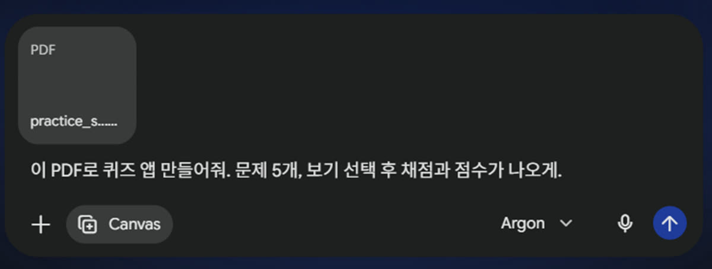
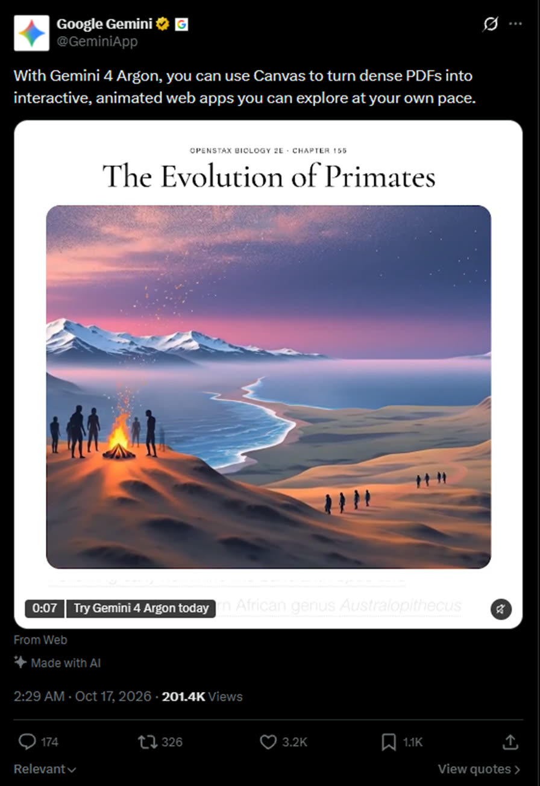
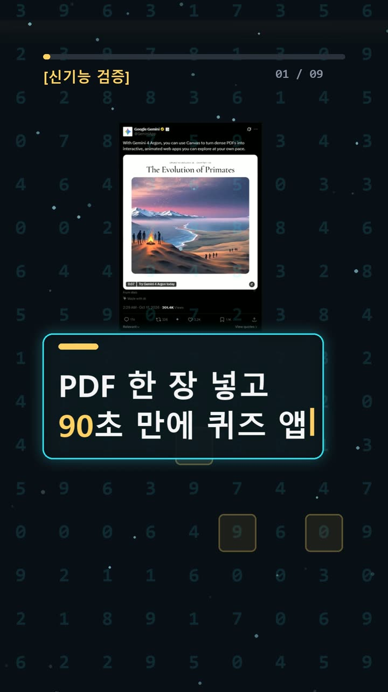
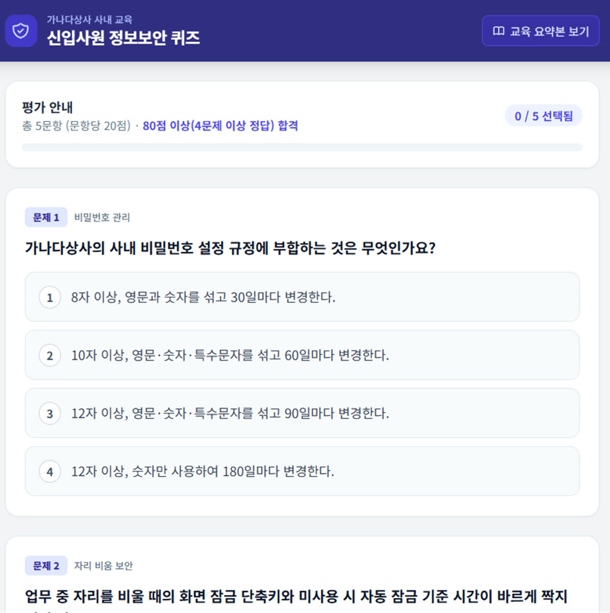

이 포스팅은 쿠팡 파트너스 및 토스쇼핑 쉐어링크 활동의 일환으로, 이에 따른 일정액의 수수료를 제공받습니다.
제미나이 캔버스로 PDF 한 장을 퀴즈 앱으로: 90초 만에 직접 해 봄

검증 범위 · 직접 확인 기록 · 확인 수준: verified · 이 글은 2026-10-19에 공식 출처를 열어 보고 우리 PC에서 직접 확인한 기록(확인 수준: verified)을 바탕으로 AI 도구와 함께 정리했습니다.
따라 할 명령어 바로 보기 (무료 공개)한눈에 보기
- 제미나이(Gemini) 웹의 캔버스(Canvas)에 PDF 1개를 올리고 "퀴즈 앱 만들어줘"라고 썼더니, 약 90초 뒤에 실제로 풀고 채점까지 되는 웹 앱이 나왔다. 캔버스는 결과물을 채팅 옆 창에 만들어 보여 주는 작업 공간이다.
- 5문제 모두 PDF 내용으로 출제됐다. 틀린 문제에는 정답, 내가 고른 답, 해설(규정 근거)이 함께 나왔다.
- 캔버스는 무료 계정에서도 쓸 수 있다고 공식 표에 나와 있다. 다만 우리는 Google AI Pro 계정 + Argon 모드로만 해 봤다.
계기는 Google Gemini 공식 X 게시물이었다. 2026-10-17 02:29(한국 시간)에 올라온 글로, 원문은 "With Gemini 4 Argon, you can use Canvas to turn dense PDFs into interactive, animated web apps you can explore at your own pace."이다. 우리말로 옮기면 "어려운 PDF를 직접 눌러 보는 애니메이션 웹 앱으로 바꿀 수 있다"는 뜻이다. 2026-10-19 21시 40분대에 다시 확인했을 때 조회 201,491회, 좋아요 3,211개였다. (공식 게시물)
시작 전에 확인할 것
- 계정: Google 계정 로그인이 꼭 필요하다. (공식 도움말)
- 요금: 요금제별 한도 표를 보면 캔버스는 무료(AI 요금제 미가입)·Plus·Pro·Ultra에 모두 체크돼 있다. 사용 횟수 한도만 다르다(무료는 표준, Plus는 2배, Pro는 4배). 한도는 5시간마다 다시 채워지고, 주간 한도도 따로 있다.
- 파일 읽는 양(컨텍스트, 한 번에 읽을 수 있는 글의 양): 무료 32,000토큰, Plus 128,000토큰, Pro·Ultra 100만 토큰이다. 그래서 긴 PDF라면 유료 요금제가 유리하다.
- 모델: 게시물에 나온 'Gemini 4 Argon'을 무료로 얼마나 쓸 수 있는지는 확인하지 못했다. 그러니 "무료로도 똑같이 된다"고 말할 수는 없다.
- 환경: PC 웹 브라우저만 있으면 된다. 공식 도움말에는 모바일 앱도 된다고 나와 있지만, 이번에는 PC 웹으로만 해 봤다.
- 주의: 개인정보가 든 PDF는 올리지 말자. 우리는 가상의 회사 '가나다상사'의 신입사원 정보보안 교육 자료(규칙 7개, 1쪽)를 직접 만들어서 썼다.
설치 방법
설치 프로그램이나 API 키(프로그램끼리 연결할 때 쓰는 비밀번호)는 필요 없다.
1. ✅ 직접 해 봄: 브라우저 주소창에 아래 주소를 입력한다.
gemini.google.com
- 이게 보이면 성공: 아래쪽에 입력창이 있는 Gemini 화면이 나온다.
2. 📄 공식 문서 기준: 오른쪽 위 Sign in을 눌러 Google 계정으로 로그인한다.
- 막히면: 'Can't access this service'나 'Something went wrong'이 뜨면 로그인이 안 된 것이다. (로그인 도움말)
사용 방법
1. ✅ 직접 해 봄: 입력창 왼쪽 '+' 버튼 > '도구 더보기' > 'Canvas'를 누른다.
- 이게 보이면 성공: 입력창에 'Canvas' 칩(작은 표시)이 붙는다.
- 참고: 공식 문서에는 '파일 추가 → Canvas'로 적혀 있다. 2026-10-19에 본 실제 화면은 '+' > '도구 더보기' 순서였다.
2. ✅ 직접 해 봄: 다시 '+' > '파일 업로드'를 눌러 PDF 1개를 첨부한다. 📄 Drive에 있는 PDF라면 'Drive에서 파일 추가'를 쓴다. 3. ✅ 직접 해 봄: 아래 문장을 그대로 입력하고 전송했다.
이 PDF로 퀴즈 앱 만들어줘. 문제 5개, 보기 선택 후 채점과 점수가 나오게.

4. ✅ 직접 해 봄: 1~2분 기다린다.
- 이게 보이면 성공: Canvas 쪽에 앱 미리보기가 뜬다. 우리 화면에서는 '신입사원 정보보안 퀴즈'가 떴다.
5. ✅ 직접 해 봄: 미리보기에서 바로 문제를 풀고 채점 버튼을 누른다. 6. 📄 공식 문서 기준: 고치고 싶은 부분이 있으면 같은 채팅 입력창에 요청을 쓴다. 변경사항은 자동 저장된다. 화면 일부만 고치려면 Canvas 패널 오른쪽 아래 선택 후 물어보기를 누르고, 고칠 부분을 고른 뒤 요청을 입력한다. 7. 📄 공식 문서 기준: Canvas 패널 오른쪽 위 코드를 누르면 코드를 보고 직접 고칠 수 있다. 오류는 콘솔 표시에서 확인한다. 8. 📄 공식 문서 기준: 오른쪽 위 공유 및 내보내기 → 공유 > 링크 복사를 누르면 g.co/gemini/share로 시작하는 링크가 생긴다. ⚠️ 이 링크를 가진 사람은 누구나 앱과 관련 데이터를 보고 고칠 수 있다.
우리가 직접 해 본 결과
확인 수준: verified (2026-10-19 21:49 KST, Google AI Pro 계정 · Argon 모드)

- 생성 시간: 전송하고 약 90초 뒤에 완성됐다. 5초 간격으로 확인해서 오차가 ±5초쯤 있고, 한 번만 잰 값이다.
- 출제 내용: 비밀번호, 자리 비움, 의심 메일·분실 신고, USB·자료 반출, 교육 이수까지 5문제가 나왔다. 모두 PDF 속 숫자로 출제됐다(90일, Windows 키+L/5분, 내선 7700, 1시간 이내, 3월/80점). 문항당 20점, 80점 이상 합격이라는 안내도 PDF 기준대로 들어갔다.
- 예상과 달랐던 점: 첫 풀이는 자동 클릭으로 했는데, 화면이 다시 그려지면서 일부 보기가 의도와 다르게 눌렸다. 그러자 앱이 "문제 2번이 선택되지 않았습니다"라는 경고를 띄우며 채점을 막았다. 2번을 고르고 채점하니 40점(불합격·재응시 필요), 5문제 중 2문제 정답이 나왔다. 실제로 선택된 답과 채점 결과는 정확히 맞았다. 앱 오류가 아니라 우리 쪽 클릭 문제였다.
- 다시 풀기: '다시 풀기'를 누르고 정답 5개를 골라 채점하니 100점(합격), 5문제 중 5문제가 나왔다.

- 해 보지 않은 것: 무료 계정으로 실행해 보지 않았고, 계산기 앱도 만들어 보지 않았다.
자주 막히는 곳
모두 📄 공식 파일 업로드 도움말 기준이다.
- '파일을 업로드하려면 데이터를 삭제하세요': Gemini 앱 저장용량(Drive 용량과는 별개)이 찼다는 뜻이다. 설정 및 도움말 → 활동에서 지울 기록을 고르고, 몇 분 기다렸다가 다시 올린다. 직장·학교 계정은 관리자만 지울 수 있다.
- '파일이 포함된 채팅의 한도에 도달했습니다.': 일정 시간 동안 올릴 수 있는 양을 다 쓴 것이다. 한도가 다시 채워질 때까지 기다리거나 Pro/Ultra로 업그레이드한다.
- '업로드 용량이 너무 커서 최상의 결과를 얻지 못할 수 있습니다.': 파일을 작게 나눠서 올린다.
- 파일을 제대로 분석하지 못했다는 오류: 파일을 다시 올린다.
- Drive의 PDF가 안 붙음: 공식 도움말은 활동 기록 유지(Keep Activity)를 켜라고 안내한다.
- 우리가 막힌 곳: 자동 클릭으로 풀면 화면이 다시 그려지면서 선택이 엇나갈 수 있었다. 사람이 직접 풀 때는 문제마다 선택이 들어갔는지 한 번 보고 넘어가면 된다.
🧰 오늘의 실험실 생존 세트 — 밤새 실험 돌릴 때 쟁여 두는 것들


정리
1쪽짜리 PDF 하나와 한 줄 부탁만으로, 약 90초 만에 채점과 해설까지 되는 퀴즈 앱이 만들어졌다. 사내 교육 자료나 공부 자료로 확인 문제를 만들고 싶은 사람에게는 바로 쓸 만한 기능이다. 한계도 있다. 이번 결과는 Pro 계정에서 한 번 해 본 결과다. 무료 계정과 긴 PDF에서는 결과가 다를 수 있다. 이 글은 실제 실험 기록을 바탕으로 AI 도구와 함께 정리했다.
혹시 글에서 틀린 부분이나 고쳐야 할 부분이 보이면 유튜브·스레드 댓글로 알려 주시면 정말 감사하겠습니다. 바로 확인해서 고칠게요!
🛒 다시 보기: 오늘의 생존 세트
🎙️ AI 음성이 궁금하다면
우리 채널 내레이션은 타입캐스트를 쓰지만, 영어·다국어 AI 음성을 실험해 보고 싶다면 ElevenLabs도 많이 쓰여요.
[광고·제휴] ElevenLabs 둘러보기🎬 쇼츠로 다시 보기 · 🧵 함께 이야기하기
🧵 스레드 @alligatorxor에서 오늘 실험 이야기 나누기 · ▶ 유튜브 새AI실험노트 다른 쇼츠 보기 · 📒 실험노트 홈